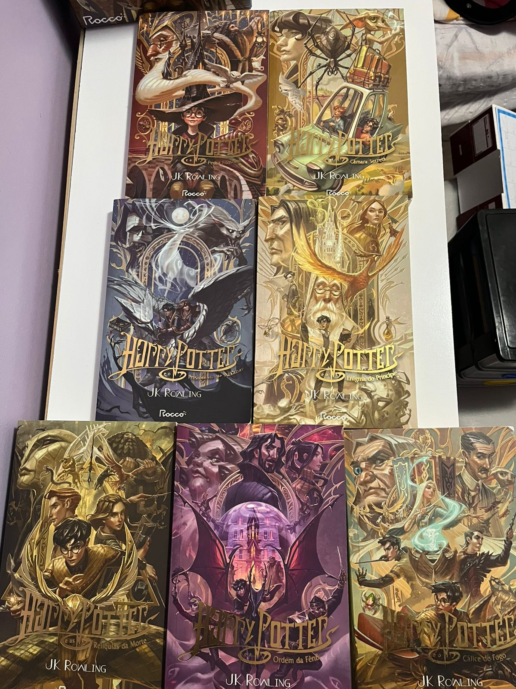
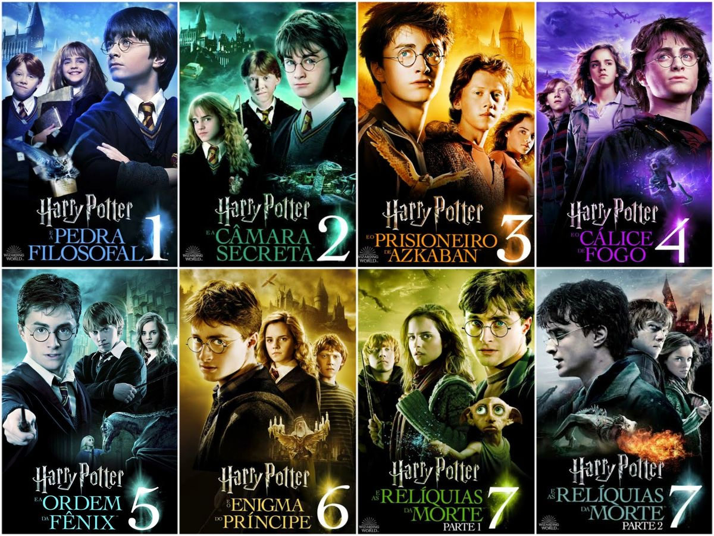

História dos fundadores de Hogwarts
Localizada na grã-betania, Escócia, a escola de magia e bruxaria de Hogwarts é responsável pela formação dos
maiores bruxos
da saga Harry Potter. Ela foi criada pelos 4 maiores bruxos da época, Godric Grifinória, Helga Lufa-Lufa,
Salazar Sonserina e Rowena Corvinal.

A magia ainda era vista como algo anormal e havia muito preconceito com os trouxas (nome dado para aqueles
que não realizam magia). O mais comum naquela
época era passar seus conhecimentos para cada geração, e, apenas na idade média que uma bruxa chamada Rainha
Maeve decidiu ajudar na educação da magia para bruxos que nasciam trouxas.
Com esse mesmo pensamento, Godric, Salazar, Helga e Rowena decidiram criar a própria escola de magia para os
bruxos, independentemente de serem puro-sangue ou não, e terem a oportunidade
de ensinar de forma segura à eles.
No início, os quatro eram os professores, selecionando os alunos de acordo com aquilo que cada um
acreditava, gerando as famosas casas de Hogwarts. Para Godric Grifinória, coragem e bravura eram as
principais características que os alunos de sua casa precisavam ter; Helga Lufa-Lufa prezava a lealdade e a
paciência; Rowena Corvinal acreditava que a inteligência era o mais importante; já Salazar Sonserina
defendia que apenas alunos puro-sangue deveriam ser aceitos na escola.

POR QUE OS LIVROS FORAM ESCRITOS?
Joanne "Jo" Rowling, mais conhecida como J. K. Rowling, conta que teve a ideia de escrever Harry Potter
em uma viagem de trem de Manchester à Londres (cuja estação de destino era King's Cross). Ela não tinha
papel e então precisou pensar sobre a ideia a viagem inteira, até chegar em Londres e conseguir
escrever.
Sua mãe acabou falecendo, e nisso, teve que se mudar para Portugal; Acabou levando seus manuscritos para
dar continuidade às histórias, além de trabalhar como professora de inglês. Foi onde conheceu seu
primeiro marido, com quem teve sua filha Jessica, em 1993.O casamento acabou em divórcio e Joanne
decidiu voltar com a filha para o Reino Unido, mais precisamente para Edimburgo, onde sua irmã vivia.
Nessa época, ela já tinha escrito os primeiros três capítulos de Harry Potter e a Pedra Filosofal.

"Harry Potter" é uma série de livros escrita por J.K. Rowling que se tornou incrivelmente popular em
todo o mundo. Ela segue a jornada do jovem bruxo chamado Harry Potter, que descobre que é um bruxo aos
11 anos de idade, quando recebe sua carta de admissão para a Escola de Magia e Bruxaria de Hogwarts. A
série explora temas como amizade, coragem, lealdade e o eterno conflito entre o bem e o mal.
Quando tiveram a ideia para os livros se tornarem filmes
Adaptação cinematográfica da série Harry Potter possui semelhanças e diferenças em relação aos
livros. Desde o lançamento do primeiro livro da série Harry Potter em 1997, os fãs do mundo mágico
criado pela autora J.K. Rowling aguardavam ansiosamente pela sua adaptação para o cinema.
Em 2001, o primeiro filme da série, Harry Potter e a Pedra Filosofal, chegou aos cinemas e iniciou
uma franquia de sucesso que durou uma década, com um total de oito filmes.
No entanto, como acontece com muitas adaptações literárias, os filmes não são idênticos aos livros
e, apesar de sua popularidade, algumas pessoas questionam se eles foram fiéis o suficiente às
histórias originais.
